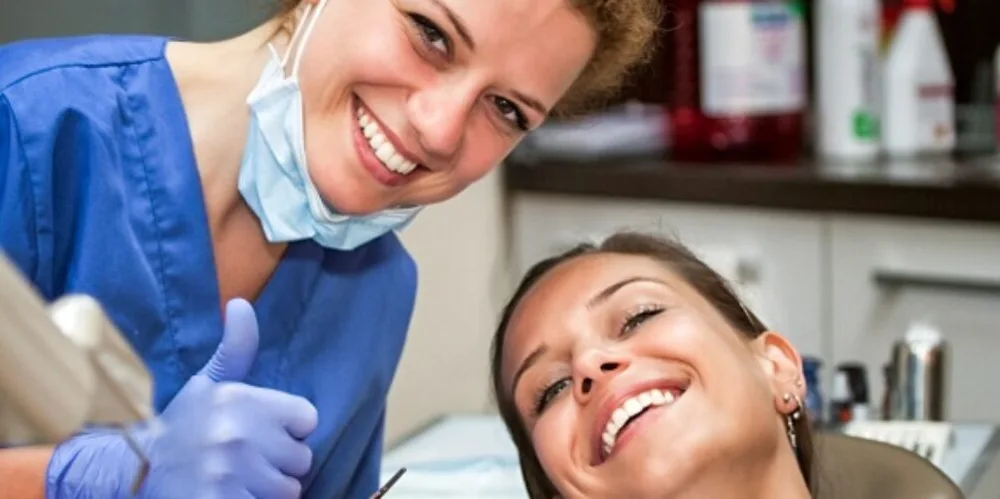
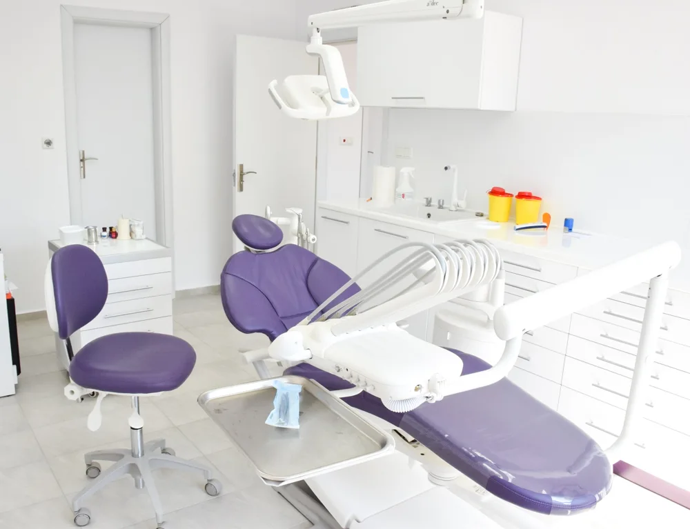
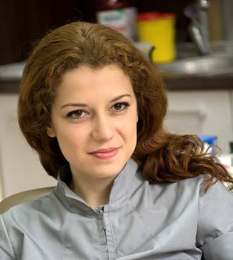
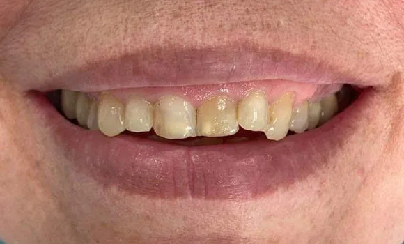
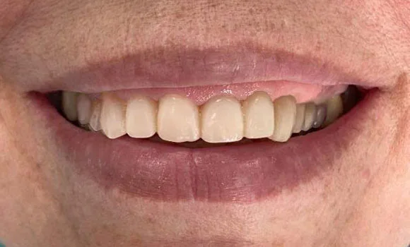
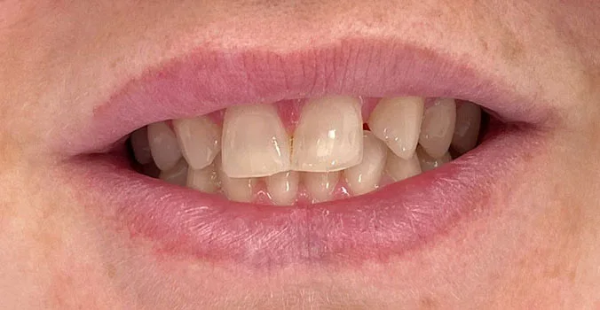
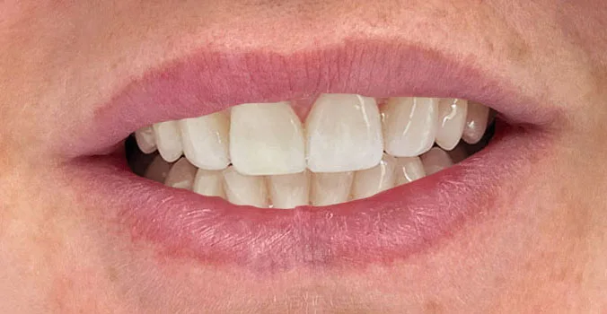

Crowns & bridges
Restore tooth function and a natural appearance.
Dental practice · Varna
A calm atmosphere, personal attention and precise dental care. Welcome to Dr. Nina Pancheva’s practice in Varna.
Discover our practice
Your smile.
Our care.
Welcome
We are here to help you care for your dental health, feel happy with your smile and know that your teeth and mouth are being looked after.
Treatment starts only after full anaesthesia, so you can feel comfortable throughout your visit. We use high-quality materials and work with a laboratory of experienced, competent specialists.
We attend courses, lectures and workshops to keep developing our knowledge and the quality of our care.
Your dentist
Dental practice · VarnaHow we can help
From prevention to complete restoration, discover every treatment available at our practice.
Restore tooth function and a natural appearance.
Precise restorations with high-quality composites.
Strong, aesthetic ceramic inlays and onlays.
Periodontal treatment and continuing gum care.
Extractions and surgical wisdom tooth removal.
Conservative changes to shape, shade and small defects.
Professional whitening with Opalescence systems.
Preventive protection for children’s permanent teeth.
Adhesive bridges, splints, posts and retainers.
Fine ceramic restorations for harmonious shape and colour.
Ultrasonic scaling, Air Flow and polishing.
Early diagnosis and tooth-coloured restoration.
Endodontic treatment and retreatment with X-ray control.
Replace missing teeth with dental implants.
Prepare and regenerate bone before implant placement.

Dr. Nina PanchevaDoctor of Dental MedicineYour dentist
Precision in the details. Personal attention at every visit.
Master’s degree in Dental Medicine, Faculty of Dental Medicine, Medical University of Sofia.
Opened her own practice at 27 Andrey Sakharov Street, room 206, Varna.
Part-time assistant in the Department of Prosthetic Dental Medicine in Varna for three semesters.
Training and courses in Bulgaria and abroad in periodontology, implantology, aesthetic dentistry and endodontics.
Explore her qualificationsOur principles
Continuing professional development through training in Bulgaria and abroad.
Material quality is something we never compromise on.
Treatment begins after full anaesthesia. We use high-grade, purified anaesthetics to minimise the risk of complications.
The practice works with Bulgaria’s National Health Insurance Fund (NHIF).
Work carried out at the practice is covered unless otherwise agreed. The guarantee depends on following the dentist’s instructions and attending the necessary preventive examinations.
When a patient calls with pain, we find a way to help regardless of how busy the schedule is.
Cash, Visa, Mastercard and Diners Club.
Real smiles
Clinical cases and patient smiles from the original practice gallery.

Before
After
Before
AfterWords from our patients
I like how gently the dentist works; I feel no pain. She uses excellent materials. I feel very comfortable and calm in the practice.
Quality proven over the years. Our whole family visits Dr. Pancheva, and everything so far has been excellent!
I can rely on Dr. Pancheva: she is a good specialist, works precisely, pays attention to every detail and treats patients fairly.
I am happy with my new smile! It took a lot of work — whitening, veneers on the front teeth and ceramic crowns on several others — but the result is wonderful and I feel great!
We had our implants placed at Dr. Pancheva’s practice. We are pleased; everything functions perfectly, the crowns are beautiful, and no one can tell we have had dental work. It looks natural and beautiful!
Let’s meet
Get in touch to arrange a consultation or a visit. We look forward to welcoming you.
VISA Mastercard Diners Club Cash
This form prepares an email in your own email app. Appointments are arranged after confirmation by the practice.
Privacy